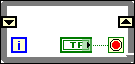

You have not wired a valid type to one of the shift registers on the block diagram. LabVIEW cannot determine what type of data to store in the shift register. To indicate this error, LabVIEW displays the shift register elements with a black border.
To correct this error, wire a valid data type to one of the shift register elements. When LabVIEW knows which data type to use, it displays the shift register elements with the color of that data type.